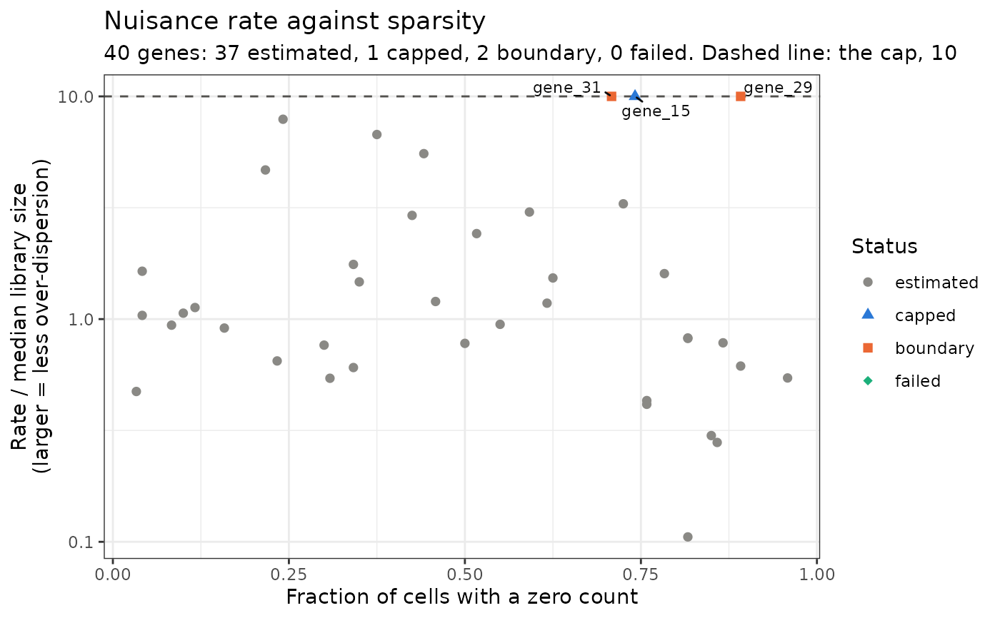

Plot each gene's nuisance rate against a summary of the gene
Source:R/plot_diagnostics.R
plot_nuisance.RdA diagnostic of the over-dispersion. Each point is a gene. The y-axis is the
gene's unit-free rate, its Gamma rate divided by the median over
cells of its library size, \(\hat\beta_j / \mathrm{median}_i\,
\ell_{ji}\), on a \(\log_{10}\) scale. A larger value means
less over-dispersion. The cap of estimate_nuisance is the
same number for every gene on this scale, and is drawn as a dashed line at
cap_multiplier; the genes it acted on sit on the line.
Arguments
- input_obj
eSVDobject afterestimate_nuisance(version 1.2.0 or later), and after the test whenx_axis = "log10pvalue".- x_axis
One of
"mean_expression"(the gene's mean count over cells, \(\log_{10}\) scale),"log10pvalue"(\(-\log_{10}\) of its p-value) or"sparsity"(the fraction of cells in which its count is zero).- bool_uncapped
If
TRUE, draw the rate before the cap (nuisance_mle_vec). DefaultFALSE, the rate the analysis used.- genes
NULL, or a character vector of genes to label.- num_label
When
genesisNULL, how many genes to label: the genes whose status is notestimated, in decreasing order of \(-\log_{10}\) p-value (or of the rate before the cap, if the object has not been tested).0labels none.
Value
A ggplot object. Its data has one row per analyzed
gene, in the order of the fit, and columns gene, x_value,
unit_free_rate, nuisance_status and bool_label.
Details
What to look for. Most genes should be estimated, below the line.
A large share at the line means the cap, and not the data, is setting the
over-dispersion. Against "mean_expression" and "sparsity", the
genes at the line are expected among the lowly expressed and the sparse,
whose counts carry little information about the rate. Against
"log10pvalue", the genes with the smallest p-values should not be
predominantly the ones at the line: a gene whose rate is very large has a
posterior that follows the fit, and an inflated statistic. Drawing the
plot with bool_uncapped = TRUE shows how far above the line the
rates were.
The function needs neither the counts nor the covariates, so it works on
an object built with bool_diet = TRUE. Genes that were not analyzed
(the all-zero genes eSVD_helper reinserts) are not drawn.
Examples
set.seed(10)
sim <- generate_null(cell_per_person = 15, num_genes = 40,
num_individuals = 8)
esvd_obj <- initialize_esvd(dat = sim$obs_mat,
covariates = sim$covariates,
metadata_individual = sim$metadata_individual,
case_control_variable = "CC",
bool_intercept = TRUE,
k = 2,
lambda = 0.1)
esvd_obj <- reparameterization_esvd_covariates(input_obj = esvd_obj,
fit_name = "fit_Init",
omitted_variables = "Log_UMI")
esvd_obj <- opt_esvd(input_obj = esvd_obj,
max_iter = 5,
offset_variables = setdiff(colnames(esvd_obj$covariates), "CC"),
fit_name = "fit_First",
fit_previous = "fit_Init")
esvd_obj <- reparameterization_esvd_covariates(input_obj = esvd_obj,
fit_name = "fit_First",
omitted_variables = "Log_UMI")
esvd_obj <- estimate_nuisance(input_obj = esvd_obj)
if(requireNamespace("ggplot2", quietly = TRUE) &&
requireNamespace("ggrepel", quietly = TRUE)){
plot1 <- plot_nuisance(input_obj = esvd_obj, x_axis = "sparsity")
plot(plot1)
}
